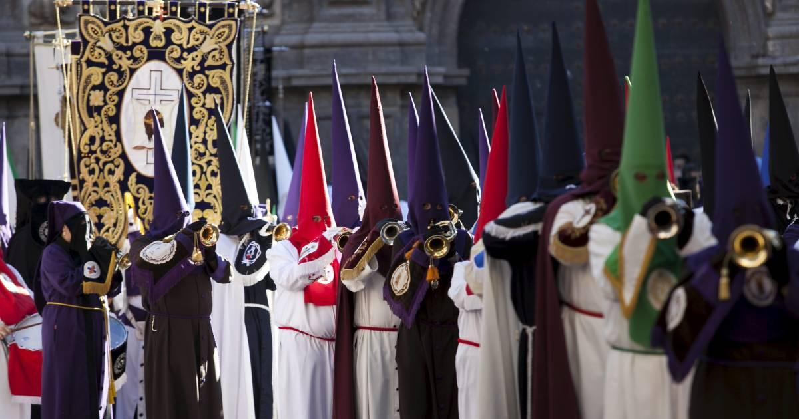
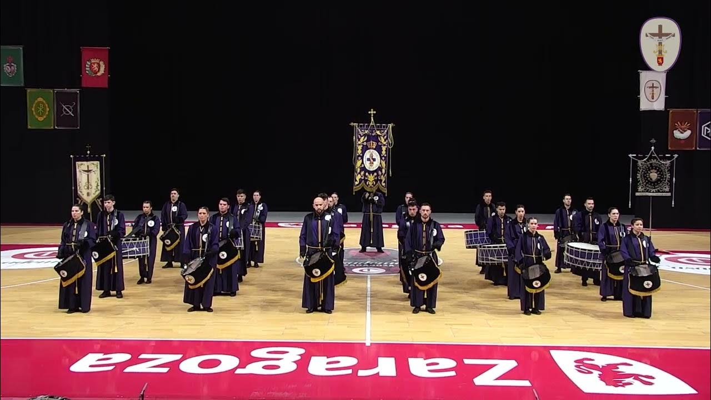

Tambor JH Valores de Semana santa
-
Valores y ganas por el tambor y la
Semana santa:
Lo que se siente al representar a tu cofradía (pasado, presente y futuro) como al estar procesionando son varios los sentimientos que pasan desde el ensayar hasta procesionar en las calles de Zaragoza.
Soy un cofrade de Zaragoza que lleva tocando el tambor desde el mes de enero del 2011 pero con el deseo de tocar el tambor desde que nací desde la silla cuando era pequeñico.
🪐 Punto 2 🪐 Punto 3
Entender que la vida es la que mueve las ganas de poder introducirse en en cosas nuevas y que mejor que tocar un nuevo instrumento.
Valores de la Semana Santa
- Valores Personales
- Responsabilidad
- Hermandad
- Honestidad
- Libertad
- Justicia
- Valores Profesionales
- Compromiso
- Respeto
- Adaptabilidad
- Esfuerzo
- Creatividad
- Crecer
- Comprender
- Nosotros
- Sociedad
- Hola
- Querido Herman@
- Adios
- Volveremos a tocar nuestros instrumentos
- Maravilloso
- Final de año 2023

🪐 Punto 4 🪐 Punto 5 🪐 Punto 6
Listo en la palabra tambor
🪐 Punto 7Lo que la vida nos deparé
Jorge Sanchez es un escritor de la edad del renacimiento

🪐 Punto 8 Ricardo ➤ Es el momento
14 89
🪐 Punto 9

➤ Nazarenos participación concurso 2023 Next: Semana Santa 2024
Concurso - Exaltación 2022 Nazarenos
| 8:30 | HUM | NAZ | SP | CAL | NAZ |
| 10:15 | ENT | ENT | |||
| 11:10 | CAL | HUE | |||
| COMER | |||||
| 12:30 | SP | EUC | HUE | HUE | HUM |
| 13:25 | ENT | ENT | SP | CAL | |
| 14:25 | EUC | EUC | |||